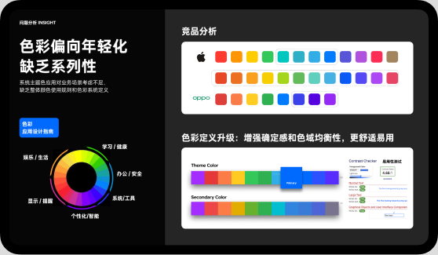

版本设计规划与体验升级
担任连续三代版本 UX 设计代表，借鉴业务战略规划方法，独立完成 OS14 设计规划。响应公司高端转型，以用户研究形成确定感、舒适感、品质感三项审美主张，推动系统控件、色彩与排版规则迁移；OS15 提供规划模板与培训，OS16 进一步推广并沉淀为部门工作方法。
项目背景
公司向高端市场转型，系统设计需要兼顾更广泛人群的审美与使用期待。原有偏风格化、年轻化的表达，需要进一步回应清晰、舒适与细节品质的要求。
过去的规划前期多从设计师头脑风暴和概念设计启动。单点概念较多，对产品自身演进、竞争变化、用户反馈和技术趋势缺少系统审视。
版本 UX 需要建立方向判断的依据，并把设计主张落实到跨业务、跨版本的改造计划。
设计目标
围绕高端转型，把设计规划推进到三个层次。
- 建立规划依据 结合产品复盘、用户反馈与竞争分析，识别值得持续投入的体验方向。
- 明确审美主张 提炼面向更广泛人群的共同需求，为系统风格迁移提供判断标准。
- 形成落地计划 将主张拆成设计规则、重点场景、团队分工与版本安排。
规划方法
在腾讯及对接 OPPO 互联网业务期间，多次参与业务 SP 战略规划。借鉴其中的“五看三定”，从 OS14 开始独立开展系统设计规划。
演进而非创造 从产品已有的积累与问题出发，结合用户和竞争变化，判断下一阶段应延续什么、改善什么。
以“忒修斯之船”解释在既有基础上持续更新，以孙悟空从石头中诞生比喻缺少积累依据的单点概念。规划中的新方向，需要说明依据与来路。
- 看自己 · 复盘产品积累汇总用户反馈，复盘过去 12 个月的设计工作，从自身产品的积累与问题出发开展规划。用户反馈 · 过去 12 个月设计复盘
- 看竞争 · 归纳竞争格局系统梳理所在领域各竞争对手的特性，归纳行业共性、友商优势与差异化打法。行业共性 · 友商优势 · 差异化打法
规划模板明确这两项洞察要求，作为业务设计单元开展规划的共同输入。
用船体逐步替换部件的三幅小图表达持续演进，旁边列出用户反馈、过去 12 个月设计复盘与竞争分析。注明“依据口述重绘的方法示意”，不使用业务路线图或真实项目排期。
高端洞察
高端转型为这套规划方法提供了具体课题：明确目标用户的共同期待，判断系统风格应如何演进。深入参与前期用户研究，结合现有系统设计分析，识别三类体验问题。
- 信息不够明确 字体偏小、标题与推荐选项不突出，图标及控件边界不清，影响信息识别与操作判断。
- 结构缺少秩序 图形形态、内容排版与留白缺乏规律，查找信息需要反复横向、纵向扫视。
- 细节品质不足 光影与材质层次薄弱，图形表达不够自然，难以感知细节经过充分推敲。
研究将这些诉求识别为可服务于更广泛人群的共性需求。由此，高端设计的重点落在清晰、舒适与品质等普适体验上。

审美主张
基于设计洞察与用户研究，以“理解高端，回归常识”概括方向，形成三项普适审美主张。
- 清晰直觉的确定感 调整字体大小、内容对比和按钮选中态，让信息清楚、边界明确、重点突出。
- 大气有序的舒适感 建立均衡的结构、清晰的布局和有节奏的留白，以柔和色彩形成自然舒展的阅读体验。
- 自然细腻的品质感 推敲光影、材质与图形隐喻，使细节有层次、过渡自然，形成连贯的整体品质。
三项主张进一步进入“形、色、字、构、质”五个设计维度，连接用户期待与具体方案。
规划拆解
围绕三项主张，明确改造内容、落地场景、负责团队和版本安排。
- 确定感 · 前置基础改造 调整主蓝色、加强对比度、增大控件尺寸。由设计标准团队推进公共控件、场景组件与弹窗。
- 舒适感 · 梳理内容秩序 调整系统与应用的排版、图标关系。由设计系统团队推进目录、卡片和控制中心等场景。
- 品质感 · 分期打磨细节 围绕主题色彩、系统图标与动效继续打磨，由应用设计团队推进天气、邮件、联系人等场景。
原稿将三条工作线分配到 14.0、14.1 和 15.0：基础识别改造前置，结构与品质改造分期展开。设计方向由此转为各团队可以承接的任务与版本计划。
风格迁移
以系统控件、色彩与排版规则为切入点，推动审美主张进入不同界面。
- 调整色彩规则 修改主蓝色，增强重点信息与选中态的辨识度，改善整体色域的均衡。
- 重建文字层级 加强字号与对比，突出标题和内容主次，让页面结构更容易识别。
- 统一控件与布局 调整公共控件尺寸，梳理列表、卡片与系统内容排版，使不同场景呈现更稳定的秩序。
选同一应用、同一任务的前后实机画面，标出字号层级、选中态或控件尺寸的一项变化，并对应到确定感、舒适感或品质感。注明系统版本与机型，用实际交付补足原稿方案对照。
版本复盘
发布后的反馈继续进入下一版规划。OS14 的用户声音集中在细节实现与基础一致性，也引发了对美学方向的质疑。主持版本复盘，结合线下风格复测，分别判断方向与实现的问题。
- 复测设计方向 线下风格复测为延续主要美学主张提供依据，同时继续关注不同人群的接受差异。
- 集中打磨核心场景 OS15 将桌面动效与十大系统场景作为重点，改善应用启动退出、负一屏和全局搜索等衔接与跟手表现。
- 前置验证高影响变更 与研发、测试识别重点系统入口，在设计稿阶段比较新方案、上一代和同类产品，及时发现操作习惯变化带来的风险。
以复盘决定延续与调整，让“演进”成为版本之间持续开展的设计工作。
按“OS14 方案—用户反馈—复测判断—OS15 调整”组织同一场景的证据。明确保留了什么、改变了什么，风格偏好与任务操作结果分开标注；只使用可公开的已发布画面和本人确认的事实。
项目成果
- 形成完整设计规划 串联用户需求、审美主张、设计策略、重点场景、团队分工与版本安排。
- 落地系统风格迁移 通过控件、色彩和排版规则改造，将确定感、舒适感、品质感落实到系统体验。
- 延续跨版本改进 结合 OS14 反馈与风格复测，保留有依据的方向，在 OS15 集中打磨核心场景。
ColorOS 15 发布后，整体口碑较上一代改善。版本反馈用于观察整体体验变化，具体设计贡献由实际改造与交付记录说明。
选择已发布版本中可公开的系统界面，按确定感、舒适感、品质感分别标注一项可见变化。优先展示跨场景采用，标明版本与范围；不使用内部路线图，也不将整体口碑归因为某一项设计。
团队赋能
在版本实践基础上，将规划方法沉淀为模板，并面向所有业务 UX 代表开展培训。
- OS14 · 独立完成规划引入业务战略规划经验，独立开展系统设计规划，组织方向判断与任务拆解。建立版本实践
- OS15 · 提供模板与培训提供设计规划模板，开展方法培训，支持业务 UX 代表开展规划。模板 · 培训
- OS16 · 沉淀部门工作方法将设计规划推广到部门范围，沉淀为各业务设计单元共同使用的工作方法。部门推广 · 方法沉淀
模板明确洞察要求，培训讲解“演进而非创造”的判断原则，各业务结合自身场景形成规划。个人的版本规划实践，由此扩展为部门共同开展的设计工作。
左侧放可公开的空白模板或方法重绘，标出“看自己”“看竞争”的要求；右侧放培训提纲与原则讲解。注明覆盖所有业务 UX 代表，口述重绘标为示意；不展示业务路线图，不虚构培训后的绩效或收益。